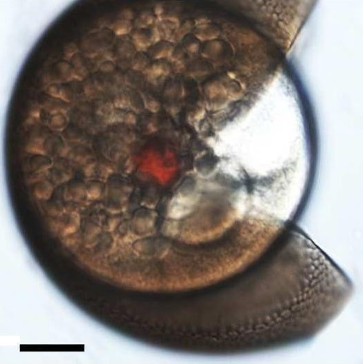
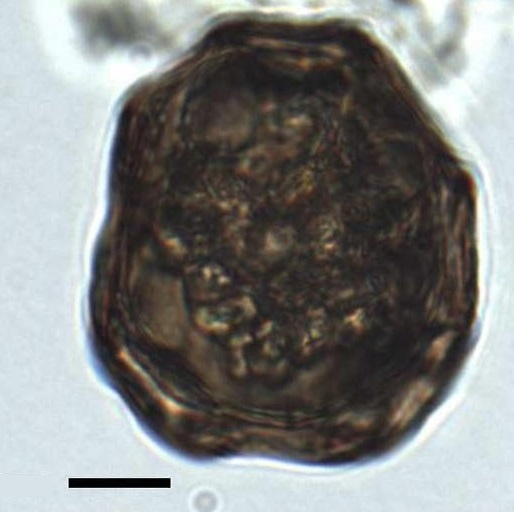
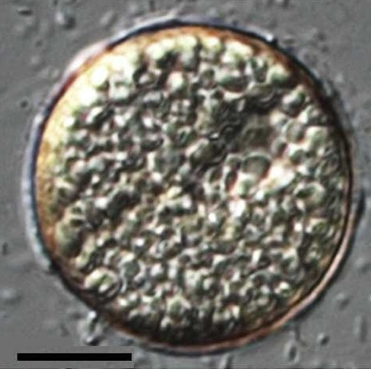
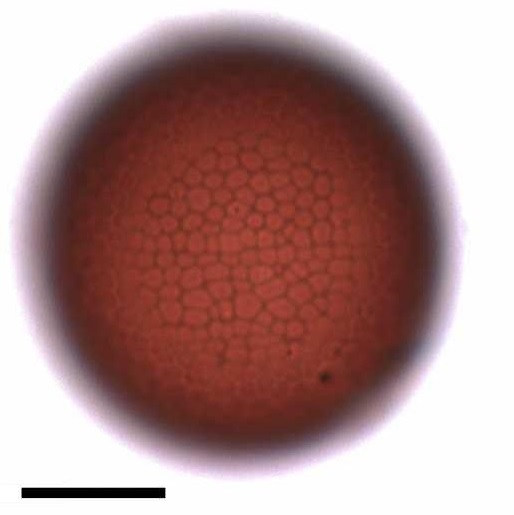
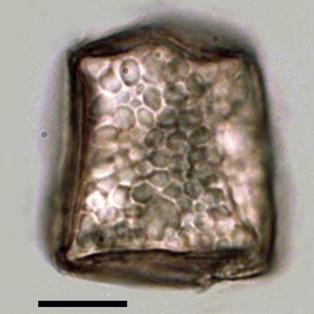

CYSTS LIST
GYMNODINIUM
Surface |
Shape |
Cingulum |
Species |
Central body (um.) |
Image |
ReticulateRed brown, single red pigmented body |
Spherical |
Laevorotatory, bordered by two parallel rows of oriented vesicles |
Gymnodinium catenatum | 38 to 60 (D) |
 |
ReticulateDisplay irregular folds of the wall |
Polygonal in outlineContain large and irregular granules |
- |
Gymnodinium inusitatum | 48 to 51 (L)38 to 41 (W) |
 |
MicroreticulatePale brown |
Spherical |
Seldom five, equal or less than four paravesicles rowsSmaller vesicles |
Gymnodinium microreticulatum | 23 to 35 (D) |
 |
MicroreticulateRed brown |
Spherical |
Two to four, three usually,uneven rows of vesicles present |
Gymnodinium nolleri | 28 to 38 (D) |
 |
MicroreticulatePale to purple brown |
Elongate rectangular |
Expressed by rows of smaller vesicles |
Gymnodinium trapeziforme | 26 to 34 (L)20 to 27 (W) |
 |